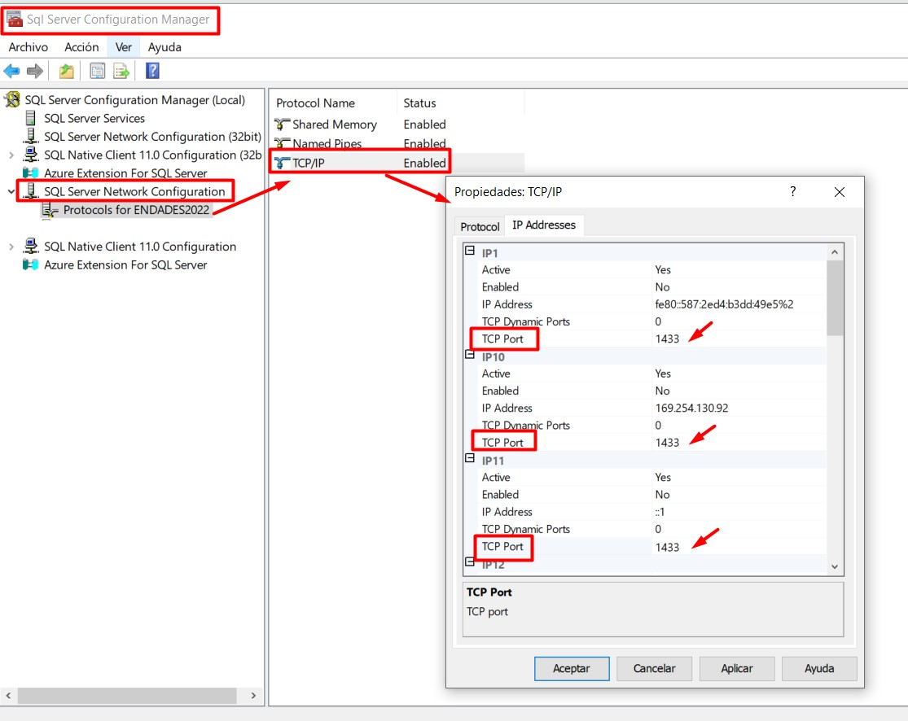

Possibili errori
1. Errori e soluzioni
1.1. Errore di connessione al server e al database
Descrizione dell’errore:
Durante la selezione del database in ENBLAU, appare un messaggio di errore quando il server o l’istanza non vengono trovati.
Questo problema può essere causato da blocchi dell’antivirus o del firewall sul server in cui è in esecuzione ENBLAU.

Soluzione:
Controllare le regole e le eccezioni dell’antivirus o del firewall sul server. Esempio:
- Da Firewall → Impostazioni avanzate → Regole in entrata, verificare che le porte 1433 TCP (porta standard di SQL Server) e 1434 UDP (per il rilevamento dell’istanza) siano abilitate:

- Da SQL Server Configuration Manager, verificare che l’istanza ENDADES2022 abbia il protocollo TCP/IP abilitato:

ℹ️ Nota: Per ulteriori dettagli, consultare la sezione 2. Impostazioni di antivirus e firewall nella guida Configurazione del Sistema.
Dopo la verifica, aprire enCONNECT e selezionare il server e il database.
1.2. Errore di connessione alla fabbrica
Descrizione dell’errore:
Durante la connessione alla fabbrica, appare un errore che indica che il percorso di esecuzione per connettersi a Logikal non è definito correttamente.

Soluzione:
Verificare che il percorso dell’applicazione Logikal sia corretto.
- In ENBLAU, andare su:
Generale → Logikal - Connessione e Progetti.


1.3. Errore di interfaccia ERP
Descrizione dell’errore:
Durante la connessione alla fabbrica, viene mostrato un errore che indica che non è stata trovata una licenza valida per l’interfaccia ERP di Logikal.

Soluzione:
Per stabilire la connessione con la fabbrica, è necessario avere installato il modulo ERP di Logikal.
Contattare Orgadata per gestire la licenza:
- Email: customer.support@orgadata.com
- Contattare il tecnico responsabile del supporto Logikal.
1.4. Errore di accesso alla fabbrica Logikal
Descrizione dell'errore:
Quando si tenta di connettersi alla fabbrica (Logikal), viene visualizzato un errore di accesso nel percorso della cartella da cui Logikal viene eseguito.

Soluzione:
Per stabilire la connessione con la fabbrica, è necessario impostare la cartella come attendibile. Per farlo, in Windows andare su Rete e Internet > Opzioni Internet:

Successivamente, in Proprietà Internet, andare alla scheda Sicurezza > Intranet locale > Siti > Opzioni avanzate e aggiungere questi 2 siti web file://server e server.

1.5. Errore di connessione al server da enSITE
Descrizione dell’errore:
Durante la connessione al server dall’applicazione enSITE (tablet), appare un messaggio di errore relativo alla connessione con il server SQL.


Soluzione:
-
Verificare la rete:
Assicurarsi che il tablet sia connesso alla stessa rete locale del server in cui si trova il database. -
Controllare firewall e antivirus:
Verificare che il firewall e/o l’antivirus non blocchino la connessione tra il dispositivo e SQL Server.
Aggiungere regole o eccezioni se necessario. -
Verificare la configurazione delle porte:
Dal server, assicurarsi che le porte utilizzate da SQL Server siano abilitate, inclusi:-
1433/TCP (porta standard di SQL Server). Verificare e configurare in SQL Server Configuration Manager:
- Andare su SQL Server Network Configuration → Protocols for ENDADES2022.
- In Proprietà TCP/IP → Indirizzi IP, assicurarsi che tutti gli IP abbiano la porta TCP impostata su 1433 e che le porte TCP dinamiche siano impostate su 0.

-
1434 UDP (per il rilevamento dell’istanza)
-
ℹ️Nota: Questo errore è comune in caso di conflitti nella configurazione di rete o sicurezza. La verifica dei punti precedenti di solito risolve il problema.
1.6. Errore di file
- Descrizione dell’errore:
Questo errore si verifica quando Windows, in alcune occasioni, corrompe determinati file. Potrebbe essere legato alla configurazione del sistema operativo.

Soluzione:
-
Eliminare la cartella:
Eliminando la cartella indicata nel percorso mostrato dall’errore, il problema viene risolto.- Chiudere ENBLAU.
- Eliminare la cartella
C:\Users\User_name\AppData\Local\Endades - Aprire ENBLAU.
1.7. Errore di registrazione della licenza
Descrizione dell’errore:
In alcune occasioni, all’apertura di ENBLAU, il sistema può richiedere nuovamente la registrazione della licenza.

Le possibili cause sono le seguenti:
- ENBLAU è installato su un server e il computer da cui viene eseguito vi accede tramite un’unità di rete. La connessione potrebbe non essere disponibile a causa di modifiche o aggiornamenti del server.
- Il computer da cui viene eseguito ENBLAU non è visibile sulla rete.
- Esistono problemi di autorizzazioni sull’unità di rete.
- Problemi relativi all’indirizzo IP e al nome del server.
Soluzione:
-
Verificare che la rete funzioni correttamente e che non vi siano problemi di connettività.
-
Soluzione per il controllo delle licenze di ENBLAU. Configurare correttamente il nome del server e il relativo indirizzo IP nel file hosts di Windows. Questa soluzione si applica in caso di una configurazione di rete errata.
-
Dal server, aprire enUPDATE e sincronizzare l’opzione Licenza e aggiornamenti. Successivamente, aprire ENBLAU direttamente dal server per verificare che venga eseguito correttamente.

- Verificare che la licenza dell’applicazione sia aggiornata per quanto riguarda i pagamenti. La licenza scade automaticamente; in tal caso, contattare il supporto tecnico tramite comercial@endades.com.
⚠️ Importante: È obbligatorio utilizzare almeno SQL Server 2022 per garantire la compatibilità con le versioni di ENBLAU e enSITE.
 Español
Español
 English
English
 Italiano
Italiano
 Português
Português